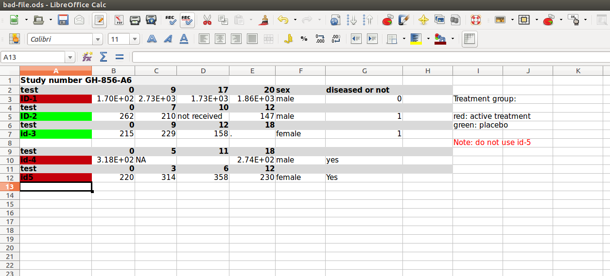

Fréquemment on reçoit ses données dans un fichier Excel. Plusieurs packages existe qui peuvent lire ce format (gdata, RODBC, XLConnect, xlsx, RExcel) (note: gdata a besoin de Perl pour importer un fichier Excel, ce qui peut ne pas être disponible sur une machine Windows, alors que ce ne serait pas un problème sur Mac ou Linux). Une meilleure manière de transférer ses données est via un fichier texte, .csv par exemple. Pourquoi csv?
Un fichier .csv est donc plus facile à utiliser, plus fiable et plus pérenne qu'un fichier Excel.
Il faut cependant que le fichier soit dans un certain format pour pouvoir être importé. Le fichier exposé dans l'image suivante comporte-t-il des erreurs?

Les données health vont être utilisées pour démontrer l'utilisation de read.csv(). Ce fichier reprend les lactations de 500 vaches provenant de différents troupeaux, avec leur âge, numéro de lactation, présence de fièvre de lait et/ou de déplacement de caillette. Pour ce faire, on utilise la fonction read.csv() qui va importer ces données tabulaires (un data frame pour R: plusieurs lignes, colonnes et de format mixte). read.csv() fait partie des fonctions read.table() (cf. ?read.table) pour importer des données de type mixte. Si les données étaient uniquement numériques, on pourrait utiliser la fonction scan() (pour des matrices). On assigne le jeu de données importé à une variable avec <- (on crée un objet dans R).
Par défaut, read.csv() utilise la virgule comme séparateur de champs. On peut modifier le séparateur en utilisant l'argument sep= (p.ex. sep=';'). Ceci est important sur des ordinateurs francophones où la virgule représente la décimale (et non le point comme en anglais). Autre solution: read.csv2().
health <- read.csv(file = "health.csv")
head(health) unique age lactation disease presence
1 K100-P284 6.7 6 mf 0
2 K100-P284 6.7 6 da 0
3 K100-P295 6.9 6 mf 0
4 K100-P295 6.9 6 da 0
5 K100-P357 5.9 4 mf 0
6 K100-P357 5.9 4 da 0str(health)'data.frame': 1000 obs. of 5 variables:
$ unique : Factor w/ 500 levels "K100-P284","K100-P295",..: 1 1 2 2 3 3 4 4 5 5 ...
$ age : num 6.7 6.7 6.9 6.9 5.9 5.9 6.6 6.6 5.4 5.4 ...
$ lactation: int 6 6 6 6 4 4 5 5 4 4 ...
$ disease : Factor w/ 2 levels "da","mf": 2 1 2 1 2 1 2 1 2 1 ...
$ presence : int 0 0 0 0 0 0 0 0 0 0 ...Utilisant str(health), chaque variable a-t-elle été importée comme vous l'espériez?
header: TRUE par défaut. Si la première ligne de votre fichier n'est pas le nom des variables, mettre header = FALSE
stringsAsFactors: par défaut, R convertit les variables de type caractères en facteurs (cf. atelier SWC). C'est peut-être ce que vous recherchiez, ou pas. Par exemple, s'il y a eu une erreur lors de l'identification de la vache K100-P284 et que vous voulez remplacer K100-P284 par K100-P999:
health$unique <- ifelse(health$unique == "K100-P284", "K100-P999", health$unique)
head(health) unique age lactation disease presence
1 K100-P999 6.7 6 mf 0
2 K100-P999 6.7 6 da 0
3 2 6.9 6 mf 0
4 2 6.9 6 da 0
5 3 5.9 4 mf 0
6 3 5.9 4 da 0Que s'est-il passé? Maintenant essayons avec stringsAsFactors:
health <- read.csv(file = "health.csv",
stringsAsFactors = FALSE)
str(health)'data.frame': 1000 obs. of 5 variables:
$ unique : chr "K100-P284" "K100-P284" "K100-P295" "K100-P295" ...
$ age : num 6.7 6.7 6.9 6.9 5.9 5.9 6.6 6.6 5.4 5.4 ...
$ lactation: int 6 6 6 6 4 4 5 5 4 4 ...
$ disease : chr "mf" "da" "mf" "da" ...
$ presence : int 0 0 0 0 0 0 0 0 0 0 ...health$unique <- ifelse(health$unique == "K100-P284", "K100-P999", health$unique)
head(health) unique age lactation disease presence
1 K100-P999 6.7 6 mf 0
2 K100-P999 6.7 6 da 0
3 K100-P295 6.9 6 mf 0
4 K100-P295 6.9 6 da 0
5 K100-P357 5.9 4 mf 0
6 K100-P357 5.9 4 da 0Rappel: Les facteurs sont en fait des nombres!
Truc: Il existe une option globale,
options(stringsAsFactors = FALSE)pour contrôler ce comprtement de manière générale. Mais changer une option globale peut avoir des conséquences non prévues lorsque combinée avec d'autres codes (de packages ou que vous sourcer dans votre code actuel). Cela vous peut aussi rendre plus difficile la compréhension de votre code. Je ne le recommande donc pas.
as.is: supprime la conversion en facteur pour un sous-ensemble des variables.
strip.white: si un blanc a été introduit avant ou après une donnée. On peut dire à R de s'en débarrasser avec strip.white.
Fonctions utiles avec les data frames
head() - pour voir les 6 premières lignestail() - pour voir les 6 dernières lignesdim() - ses dimensionsnrow() - le nombre de lignesncol() - le nombre de colonnesstr() - structure de chaque colonnenames() - liste l'attribut names d'un data frame (ou n'importe quel autre object), ce qui donne les noms des colonnes.Le package foreign permet d'importer des données en format propriétaire binaire tels que Stata, SAS, SPSS etc. Par exemple:
install.packages("foreign")
library(foreign)
read.dta("health.dta") # for Stata files
read.xport("health.xpt") # for SAS XPORT format
read.spss("health.sav") # for SPSS format
read.epiinfo("health.REC") # for EpiInfo format (and EpiData)
read.mpt("health.mtp") # for Minitab Portable Worksheet
## other solutions for Stata files:
library(memisc)
Stata.file()
library(Hmisc)
stata.get()
## other solution for SPSS files:
library(Hmisc)
spss.get()Remarquez que vous ne pouvez pas importer des fichiers SAS en format permanent (.ssd ou .sas7bdat). Si SAS est installé sur votre système, vous pouvez utiliser read.ssd pour importer ces formats.
Truc: Si vous n'avez pas SAS et que vous roulez sous Windows, vous pouvez utiliser le SAS System Viewer (téléchargement gratuit) pour ouvrir votre fichier SAS et l'exporter en
.csv.
Autres solutions pour les fichiers SAS:
library(SASxport)
read.xport("health.xpt")
sas.get() ## in package Hmisc
library(sas7bdat)
read.sas7bdat("health.sas7bdat")Les fichiers compressés par l'algorithme gzip peuvent être décompressés par la fonction gzfile et ceux par l'algorithme bzip2 par la fonction bzfile.
read.table(gzfile("health.gz"))Il y a plusieurs packages permettant de connecter R à un DBMS (RODBC, RMySQL, RSQLite, ROracle etc.).
En plus des packages cités plus haut pour Excel, on peut utiliser les suivants pour avoir accès à Google docs ou un fichier .ods.
library(RCurl)
myData <- getURL("https://docs.google.com/spreadsheet...")
read.csv(textConnection(myData)) # reading from Google spreadsheet
## for ODS files:
library(gnumeric)
library(readODS)
library(ROpenOffice)Information additionnelle